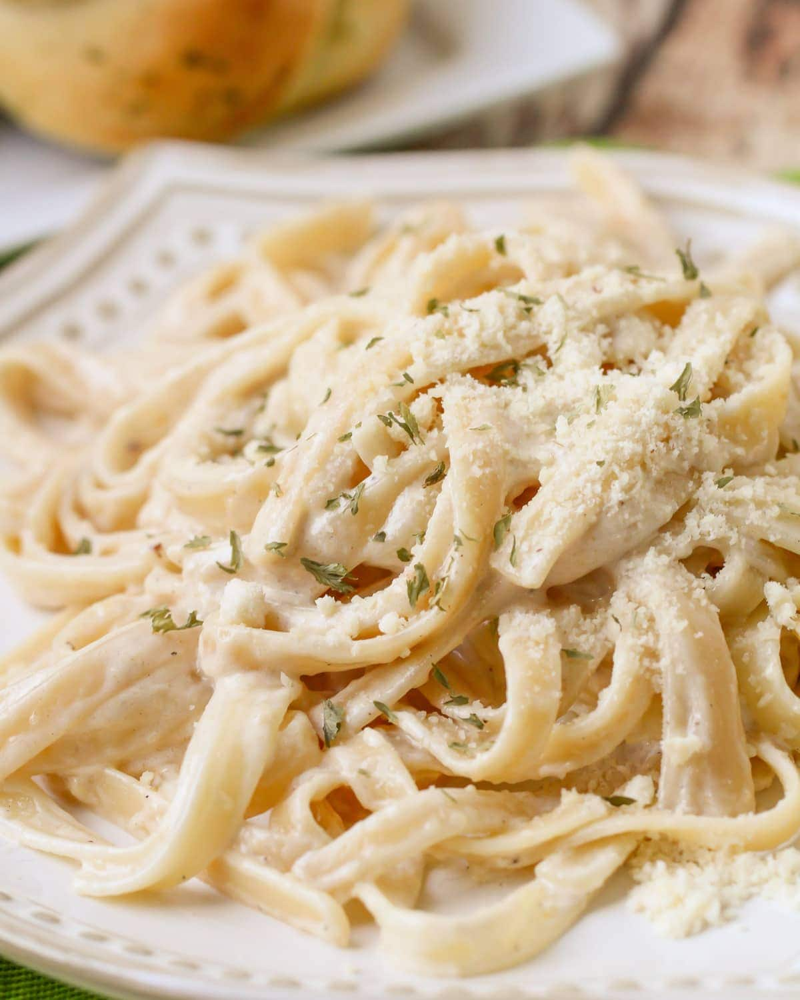

Fettucine Alfredo

This easy pasta recipe is perfect when you are craving a hearty plate of pasta. Done in 20 minutes, it is one of my go to recipes.
Ingredients
500g Fettucine pasta
50g Butter
3 Large garlic cloves
400ml Heavy cream
300g Parmesan cheese
1 tsp Salt
1/2 tsp Black pepper
Directions
- In a large pot, salt some water and bring it to a boil. Add the pasta once it's boiling and cook as directed on the package.
- Meanwhile, melt the butter in a large skillet, mince the garlic and add it in.
- After 2 minutes, add the heavy cream, salt and pepper. Let it heat up until it bubbles.
- Grate the parmesan cheese. Remove the sauce from the heat and add the cheese.
- Add the pasta to the sauce and add pasta water if needed, to adjust the consistency of the sauce.
- Serve with extra grated parmesan on top and optional parsley.